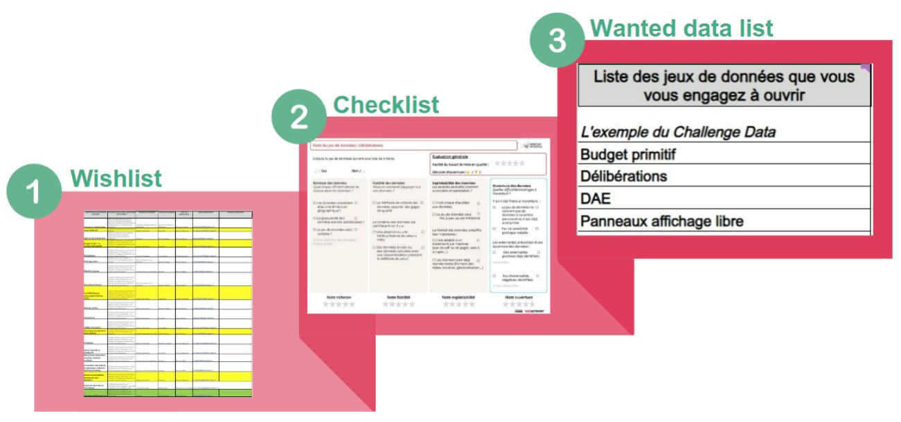
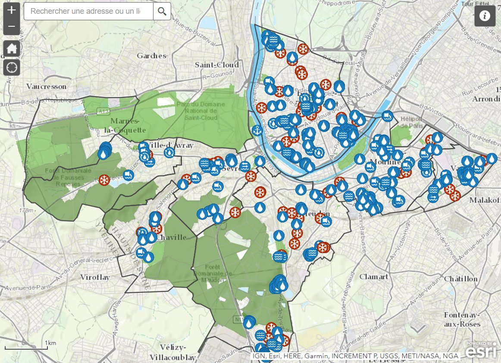
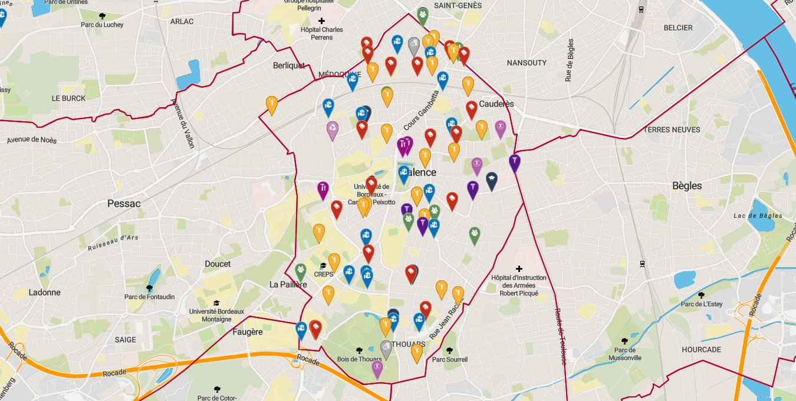

Challenge data
Bordeaux Métropole
Introduction
Territoires pionniers en France de l’open data, Bordeaux Métropole et la ville de Bordeaux œuvrent activement depuis le début des années 2010 à l’ouverture et la réutilisation des données publiques dont elles ont la responsabilité. Dès 2011, la Communauté Urbaine de Bordeaux et la ville de Bordeaux inaugurent les premiers portails de données ouvertes du territoire. En 2019, les deux administrations font converger leurs outils et créent, avec l’aide de cinq communes métropolitaines pilotes (Bègles, Mérignac, Le Taillan-Médoc, Pessac et Talence), “l’atelier open data” : une plateforme de données ouvertes mutualisée.

La mise à disposition de la plateforme s’accompagne d’une offre de service open data opérée par la Direction Générale Numérique et Systèmes d’Information (DGNSI) commune à la Métropole et à la ville de Bordeaux. En janvier 2023, l’atelier open data compte plus de 360 jeux de données accessibles et a permis la création d’une dizaine d’applications et de services par l’administration ou des tiers réutilisateurs.
Constat
Bien que pouvant être considéré, à juste titre, comme une réussite et une des dynamiques exemplaires d’open data territoriales en France, l’atelier open data Bordelais souffre d’un mal trop bien connu des collectivités territoriales en charge d’une politique de données ouvertes sur un territoire. La production et l’ouverture de données ne repose que sur un nombre limités de producteurs.
En l’espèce, les jeux de données de l’atelier open data sont publiés pour plus de 70% par la Métropole de Bordeaux et 25% par la Ville de Bordeaux. La ville de Talence (20 jeux de données) et la ville de Pessac (2 jeux de données) sont les deux seules autres collectivités productrices de données de la plateforme, comme le montre la liste des producteurs de données de l’atelier open data au 1er janvier 2023.

Conscient de cette faiblesse, la Métropole de Bordeaux a souhaité redynamiser la démarche d’ouverture des données pour les communes de son territoire. Elle proposa à 14 communes (6 communes pilotes ayant déjà accès à l’atelier open data et 8 nouvelles communes membres du service commun DGNSI) de participer à un challenge data d’avril à juin 2023.
Sur les 14 communes, 5 communes ont accepté de relever le défi et d’être accompagnées par la DGNSI et Datactivist dans l’ouverture et la valorisation de leurs jeux de données : la ville de Bordeaux, Talence, Mérignac, Le Taillan-Médoc et le Haillan.
Objectif
D’une durée de 3 mois et composé de 5 ateliers, le challenge data poursuit 3 principaux objectifs :
- Acculturer et former les référents open data des communes par la pratique
Le challenge data vise à transmettre les piliers d’une culture générale de la donnée par la pratique. Afin d’éviter les écueils d’une approche descendante et peu motivante, les participants manipulent les données de leurs collectivités tout au long du challenge.
- Relancer la dynamique d’ouverture au sein des communes pilotes
Plus qu’une simple formation, le challenge data permet aux participants de découvrir un nouveau cadre méthodologique de publication de données. Les référents open data collaborent de l’identification à la valorisation des données dans un cadre ludique propice à une nouvelle forme d’engouement pour l’open data. Suite au challenge, ils pourront librement réutiliser cette méthode pour travailler sur de nouvelles données.
- Impulser un écosystème public de la donnée sur le territoire métropolitain
Les résultats du Challenge sont très concrets : jeux de données publiés et datavisualisations disponibles sous forme de graphiques ou de cartes. Les bénéfices de l’open data sont visibles et les communes participantes convaincues par l’utilité et la faisabilité de l’ouverture.
Méthode
Comme indique, le challenge se compose de 5 ateliers introduits par un webinaire de présentation. Lors de chaque atelier, les animateurs présentent une partie théorique courte pour comprendre les principes de base de l’open data mais aussi et surtout une partie pratique durant laquelle les participants font eux-mêmes.
 Étape 1 : Diagnostic et identification des données
Étape 1 : Diagnostic et identification des données
 Principe
Principe
A partir d’un catalogue de données, les participants choisissent les données qu’ils souhaitent ouvrir pour réaliser leur wishlist, c’est-à-dire, la liste des données qu’ils souhaiteraient ouvrir. Forts de cette liste, ils partent ensuite à la recherche des données au sein de leur collectivité. Puis, chaque jeu de données collecté est étudié au travers d’une checklist pour évaluer le travail de mise en qualité nécessaire. Cela permet d’évaluer la faisabilité du travail à fournir, de hiérarchiser et de prioriser les efforts. A la fin de l’atelier, les participants définissent leur “Wanted data list”, c’est-à-dire, la liste des jeux de données qu’ils s’engagent à ouvrir.

Supports
Animation de l’atelier

Cet atelier permet de commencer en douceur. On compare des jeux de données, on se pose les premières questions de faisabilité. Les canevas permettent de rassurer et de rendre concret le travail à venir.

Une question a été posée proche de la fin de l’atelier pour savoir à quoi devait ressembler un jeu de données pour être publié. Nous avons montré les ressources de l’atelier suivant comprenant des schémas de données. La réponse a été instantanée : “Ah, c’est juste ça !” Nous aurions pu ajouter à la présentation un avant/après sur la mise en qualité d’un jeu de données pour montrer que cela est très accessible.

Partir d’exemples réels adaptés au public présent. Par exemple, pour s’adresser à un service particulier, l’idéal est de trouver des jeux de données qu’ils manipulent au quotidien.
Étape 2 : Mise en qualité
Principe
L’étape de mise en qualité consiste à mettre en parallèle le jeu de données récupéré et un modèle de données. Les modèles, accompagnés de leur documentation, permettent une montée en qualité des données proposées en open data, surtout lorsque plusieurs producteurs de données produisent un même jeu de données. Ils peuvent être issus des schémas répertoriés sur https://schema.data.gouv.fr ou réalisés par les soins des animateurs à partir de jeux de données de qualité produits par d’autres collectivités (notamment la ville de Bordeaux).
Puisque chaque participant peut avoir un niveau différent sur l’utilisation d’Excel et que Bordeaux Métropole utilise la solution Open Data Soft pour son portail open data, il a été réalisé un tableau des différents traitements possibles avec des tutoriels pour chacun. Ainsi les participants ont nettoyé, compilé et standardisé leurs données. Cette étape est la moins glorifiante et souvent la plus longue, elle a donc pris 2 séances. C’est aussi le moment de questionnement de la saisie de la donnée au sein de son administration pour savoir si dorénavant, ces modifications devront être réalisées dès la phase de production ou si elles resteront à la charge du référent open data.
Supports
Animation de l’atelier
La documentation des modèles de données a permis aux participants de comprendre l’aboutissement prévu du nettoyage. Lors de la seconde séance, les participants se sont dit “à l’aise” avec la méthode. Avec la pratique, la méthode et même la comparaison avec d’autres jeux de données produits par d’autres étaient acquises.
Les tutoriels ont bien aidé mais le template était prévu pour documenter au fur et à mesure les modifications apportées au jeu de données brut et décidé par écrit quand cette modification devait être réalisée (par le producteur de la donnée ou par le référent). Or, ce template n’a pas souvent été complété. Pour ne pas freiner le nettoyage et l’excellent volonté des participants, le format pourrait être adapté :
- On nettoie avec les tutoriels en support si besoin
- On valide que le jeu de données est prêt
- On documente uniquement à la fin les modifications et la suite à donner
Faire quelques démonstrations simples qui font gagner beaucoup de temps pour donner envie de regarder les tutoriels sinon les participants ont tendance à garder leurs habitudes et pour la plupart font à la main.
Ne pas préjuger du niveau des participants et ne pas oublier d’expliquer les manipulations les plus simples. Par exemple :
- Copier / Coller les valeurs brutes
- Recherche/Remplacer
- Convertir
Étape 3 : Publication
Principe
Cette étape est au cœur du challenge : la publication des jeux de données sur l’atelier open data métropolitain permet de travailler sur les enjeux liés à la publication des données afin d’en faciliter la découvrabilité et l’usage à travers le renseignement précis des métadonnées et de la licence.
Animation de l’atelier
La publication réelle se résume à 2 clics. La partie théorique sur la documentation et sa mise en pratique sont donc l’essentiel de cet atelier. La réussite repose alors sur la compréhension du concept que publier pour publier n’a pas grande valeur, publier pour que le jeu de données puisse être trouvé et utilisé beaucoup plus.
Nous n’avons pas eu le temps de faire la partie relecture par les pairs. Cette relecture permet de vérifier si une personne qui ne connaît pas le jeu de données est en capacité de le réutiliser avec la documentation proposée. Ce travail se révèle souvent très instructif pour toutes les parties. Si cette séance devait être rejouée, nous serions bien plus attentifs au timing pour maintenir cette partie.
Il est important de faciliter au maximum la réalisation de la documentation. Il s’agit d’un travail assez fastidieux qui arrive après le nettoyage de données. Pour cela, ne pas hésiter à fournir le support datasheets for datasets en version modifiable afin de pouvoir répondre aux questions sans avoir à les réécrire ou encore à proposer des exemples de documentation pour inspirer.
Étape 4 : Valorisation des données
Principe
Parce que le travail d’une collectivité locale ne doit pas s’arrêter à la publication, le challenge propose une étape de valorisation des données. Après une partie théorique rapide des bases de la datavisualisation, les participants réalisent une dataviz imposée pour comprendre l’outil Open Data Soft et ses subtilités. Puis, la partie la plus créative arrive. C’est l’heure de se poser les questions sur ce que l’on souhaite représenter et dessiner à la main sa datavisualisation. L’atelier met en exergue que la dataviz ne se restreint pas à l’outil utilisé mais bien au message que l’on veut faire passer. Enfin, bien entendu, les participants réalisent, sur Open Data Soft, la datavisualisation imaginée.
Cette étape permet de se rendre compte de la qualité de ses données. Quoi de mieux qu’une carte pour visualiser qu’une école est mal placée donc que les coordonnées géographiques sont erronées. Cette étape de valorisation permet donc de se mettre à la place du réutilisateur et de comprendre les potentiels cas d’usage liés à ses données.
Animation de l’atelier
Le dessin des dataviz, les âmes d’artistes ont pu se révéler !
Cette étape est la plus appréciée et tout le monde repart avec le sourire et le sentiment d’avoir produit quelque chose d’utile. Mais lorsqu’on se rend compte que ses données comportent des erreurs et nécessitent un retraitement, il semblerait utile d’avoir une session supplémentaire pour boucler le processus. De plus, le temps consacré à la réalisation des datavisualisations passe très vite, une seconde session pourrait permettre d’aborder d’autres outils.
Pour la visualisation imposée, intégrer un “piège” sur les facettes du jeu de données. Cela permet aux participants de comprendre en un instant l’intérêt de bien les sélectionner !
L’étape du dessin est particulièrement révélatrice des réflexions à avoir pour réaliser sa datavisualisation, il faut bien avoir le temps de réaliser cette partie avec présentation au groupe.
Résultats

Points d’eau potable
Prenons le cas d’usage des points d’eau potable dans une ville. La donnée n’est pas sensible et son ouverture est utile aux usagers : des habitants aux touristes. Dans le cadre du Challenge, les points d’eau potable de la ville de Mérignac ont été ouverts. Les voici, présentés sur une carte sur laquelle nous avons ajouté les contours des quartiers pour se repérer plus facilement.
Lien des points d’eau de Mérignac sur l’Atelier Open Data
Si l’on recherche sur le portail, on remarque que deux autres villes ont publié leurs points d’eau potable, il semble donc intéressant de les ajouter à la datavisualisation.
Lien des points d’eau Mérignac, Talence, Bordeaux sur l’Atelier Open Data
Que faire après le challenge ?
Certaines collectivités ont recensé les points d’eau potable mais aussi tous les équipements et espaces pour se rafraîchir lors de canicules. On peut voir sur la capture ci-dessous les lieux d’activités nautiques, les bassins d’ornement, les points d’eau potable, les brumisateurs, les fontaines d’ornement, les piscines mais aussi les locaux qui peuvent accueillir les personnes vulnérables en cas de très fortes chaleurs sur plusieurs jours ou encore les forêts, l’hydrographie ainsi que les parcs, jardins et squares sur le territoire de Paris Seine Ouest.

Lien vers la carte interactive
Cet exemple montre l’intérêt immédiat de l’ouverture de ces données pour les populations à risque lors des canicules.
Effectifs scolaires
La ville du Haillan a publié les effectifs scolaires depuis l’année scolaire 1994/1995. Cela permet de visualiser l’évolution des effectifs de cette date à aujourd’hui. Nous avons comparé cette évolution à celle du nombre de classes.
On remarque facilement que le nombre d’élèves commence à diminuer pour un nombre de classe stable. Si la collectivité se posait la question de l’intérêt de construire ou non un nouveau groupe scolaire, ces éléments peuvent contribuer à la réponse.
La ville de Mérignac a aussi publié les effectifs scolaires. On remarque que les données sont différentes. En effet, la ville de Mérignac s’est concentrée sur le millésime 2023. Dans les années à venir, il sera intéressant de suivre la mise à jour de ce jeu de données pour pouvoir suivre les effectifs dans le temps.
D’autre part, à partir de ces jeux de données, il est possible de réaliser une carte pour situer les écoles et ceci pour les deux jeux publiés.
Cartes des écoles du Haillan et de Mérignac
Ces données peuvent être combinées à celles de la sectorisation scolaire. Ainsi, un usager qui souhaite s’installer sur un nouveau territoire peut s’informer de l’école dont ses enfants dépendraient sans avoir à solliciter l’administration. Le jeu de données sur la sectorisation scolaire de Mérignac est en cours de production. Celui de la ville de Bordeaux était déjà en ligne avant le challenge.
Que faire après le challenge ?
La ville d’Issy les Moulineaux met à disposition des habitants un outil pour savoir à quelle école est rattachée chaque adresse. L’utilisation est très simple, en indiquant son adresse, l’outil indique les écoles maternelle et primaire à laquelle est rattachée l’adresse.

Lien vers la réutilisation de la ville d’Issy-lès-Moulineaux
Liste des associations
La ville de Talence a publié la liste des associations qui agissent sur la ville. Cette liste présente les contacts des associations ainsi que leur localisation. En regardant cela sur une carte, on remarque que certaines associations ne sont pas localisées à Talence.
Le jeu de données ne propose pas de catégorisation des associations alors que l’annuaire des associations du site de la ville en propose une :
- Action sociale & solidarité
- Autres
- Culture
- Emploi & économie
- Jeunesse & vie étudiante
- Santé
- Seniors
- Sport
Pour le moment, on ne peut donc pas filtrer uniquement les associations sportives ou culturelles par exemple. D’autres collectivités le font, comme ce jeu de données de la ville d’Angers, de plus la ville de Bordeaux dispose d’un site dédié à ces associations : https://assos.bordeaux.fr. Afin de pouvoir faire une carte des associations de l’ensemble du territoire de Bordeaux Métropole, il est plus opportun de préconiser d’utiliser la catégorisation de la ville de Bordeaux qui est :
- Vivre ensemble, vie quotidienne
- Culture
- Sport
- Loisirs
- Education - Enfance - Jeunesse - Vie étudiante
- Entraide, solidarité, humanitaire
- Santé, bien-être
- Cadre de vie environnement
- Sciences
- Economie
- Emploi, insertion professionnelle, formation

Cela permet de visualiser sur la carte les différents types d’associations, de faire des recherches et de filtrer selon ses besoins. Commentaire à effacer : JDD réalisé par Sarah pour la catégorisation, à valider avec Tristan pour voir si mise en ligne en l’état possible. Image car la carte refuse de s’enregistrer sur Open Data Soft.
Que faire après le challenge ?
La collecte des données auprès des associations peut être fastidieuse. D’autre part, lorsqu’un usager recherche une association, c’est pour faire une activité. La liste n’est donc que la porte d’entrée pour obtenir les informations requises : activités proposées, tranche d’âge, horaires, disponibilités, tarifs…
Pour offrir un service supplémentaire à leurs habitants, quelques villes ont fait le choix de donner la main aux associations pour remplir les données les concernant. Cela permet de mettre à disposition l’ensemble des informations nécessaire à la recherche d’une activité, le tout avec un système de recherche facilité.
Exemples :
Réservation des salles municipales
La ville de Bordeaux a publié les réservations de salles municipales. La direction pourvoyeuse des informations est la direction vie associative enfance et jeunesse de la mairie de Bordeaux. Chaque enregistrement mentionne l’équipement public, la salle, l’usager, l’heure de début, l’heure de fin, la durée de la réservation. Les enregistrements sont enrichis d’informations caractérisant les locaux concernés (horaires d’ouverture, superficies, capacités…).
La ventilation des informations par quartier et équipement public peut permettre aux réutilisateurs de croiser les données de ce jeu avec celles d’autres jeux dans lesquels ces 2 notions d’équipement public et de quartier sont présentes.
Deux visualisations ont été réalisées à partir de ce jeu de données. La première permet de visualiser le nombre d’heures de réservation de salle par quartier puis le zoom permet une visualisation de plus en plus fine.
Cartographie réservation de salles à Bordeaux
Puis voici un tableau de bord permettant de comparer les réservations
selon les quartiers, les équipements et les dates. 
Statistiques réservation de salles à Bordeaux
La collecte des informations a été initiée par un retraitement bureautique des données exportées du système de gestion des réservations des salles (Planitech). Il a été choisi de garder une granularité très fine des données pour permettre les réutilisations les plus larges possibles.
Et après
Outre l’ouverture et l’usage de nouveaux jeux de données présentés plus haut, ce challenge data a permis de construire une petite communauté de référents open data très motivés pour continuer à ouvrir des données au sein de leurs communes. Suite aux 5 sessions de travail, les participants repartent avec deux idées majeures :
- L’open data, ce n’est pas si compliqué !
- L’open data est utile pour leurs communes
Cependant, la fin du challenge data ne doit pas être une fin en soi. Elle doit marquer le début d’une nouvelle politique d’animation des données territoriales, volontariste et tournée vers l’extérieur et notamment les communes. Les enjeux et questionnements sont multiples :
- Quels sont les objectifs de cette nouvelle communauté ?
- Comment et dans quel cadre Bordeaux Métropole doit-il poursuivre son animation ?
- Comment développer cette communauté à d’autres communes du territoire métropolitain ?
- Quels moyens et ressources doivent y être dédiés ?
Réalisé par Datactivist
2023/08